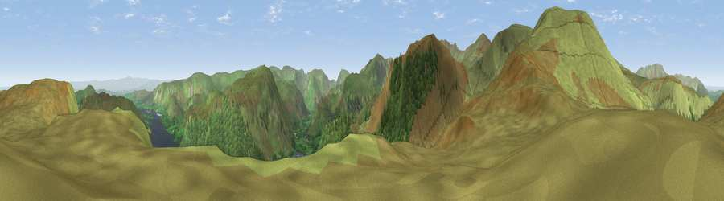

Viewpoint near Glenridding
#2305 in England · top 16% of its area beats it · near GlenriddingWhere it is
The exact computed spot (NY 37818 19390). Click the marker for map links.
The view, rendered

A 360° render of this exact spot computed from the terrain model, tree cover and land cover — summer colours, afternoon light, calibrated against photographs of famous viewpoints. Real trees, hedges and buildings will differ in detail.
The panorama
Grey silhouette: terrain skyline in each direction (720 bearings, Earth curvature and refraction included). Dashed green: skyline with trees (+15 m) and buildings (+8 m) as obstacles. Blue strip: how far the ground is visible on each bearing.
Where the view opens
Wedge length = distance to the farthest visible ground on that bearing (vegetation-aware). Rings at 10, 25 and 50 km.
What fills the view
57% grassland · 28% woodland · 15% water
Angular shares of the visible panorama (visual magnitude), not map area. Landscape diversity 0.42 (0–1 Shannon).
Key numbers
More beautiful places nearby
The staircase of upgrades: each row has a higher view potential than everything closer. Driving times are estimates from straight-line distance, calibrated against real road routing — check an actual route before setting out.
| Place | Direction | Drive | Score |
|---|---|---|---|
| Viewpoint near Dockray | NNE · 0 km | ~1 min | 76.4 |
| Common Fell | NNE · 1 km | ~4 min | 76.7 |
| Great Dodd | WNW · 4 km | ~9 min | 80.4 |
| Raise | WSW · 4 km | ~9 min | 81.5 |
| Viewpoint near Legburthwaite | SW · 6 km | ~12 min | 83.8 |
| Viewpoint near Legburthwaite | SW · 6 km | ~13 min | 84.5 |
| Skiddaw South Top | NW · 15 km | ~27 min | 85.8 |
| Viewpoint near Applethwaite | NW · 15 km | ~27 min | 86.7 |
54.56589, -2.96321 · source: osm viewpoint · position refined by local search. Computed location — check access rights before visiting.